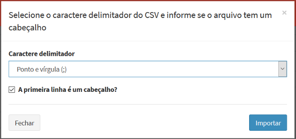

Dado de Ocorrência
SÉRIE DE DADOS DE OCORRÊNCIAS 
Os dados dinâmicos do tipo Ocorrências podem ser oriundos de diversas fontes como apresentado no Capítulo 1. Para facilitar o seu uso foi incluído a leitura desses dados nos seguintes formatos:
- Ocorrência - Prog. de Queimadas / INPE: arquivos ASCII de pontos com uma sintaxe específica do projeto de Queimadas do INPE.
- Ocorrência – Prog. de Raios / INPE: arquivos ASCII de pontos com uma sintaxe específica do projeto do ELAT/INPE.
- Ocorrência – CSV customizável: arquivos ASCII de pontos com uma sintaxe configurável para qualquer arquivo texto.
- Ocorrência - PostGIS: esta opção requer que os dados de pontos de ocorrência estejam em uma tabela de um sistema gerenciador de banco de dados PostgreSQL + PostGIS.
A plataforma pode utilizar o dado disponível no servidor de banco de dados, neste caso, os parâmetros na aba “Armazenar” não devem ser preenchidos. Caso queira transferir os dados de ocorrência entre servidores preencha os parâmetros na aba “Armazenar”.
- ADICIONANDO DADO DINÂMICO - OCORRÊNCIA:
Para adicionar um novo dado dinâmico do tipo Ocorrência é necessário ter um projeto ativo. No menu de opções selecione “Dados Dinâmicos” para que a lista de dados disponíveis seja apresentada na área de trabalho. Clique no botão “ + “ para adicionar novo dado. Utilize o botão “Salvar” para salvar o dado dinâmico. Não é permitido nomes de dados em duplicidade. Botão “Cancelar” volta à tela anterior sem salvar o dado. A Figura 2.18 mostra a área de trabalho para adicionar novo dado dinâmico. Detalhes de cada campo a seguir.

Figura 2.18 – Módulo de Administração: Adição de dado dinâmico - Ocorrência
Registro de Dado Dinâmico - Geral:
- Formato: Escolha o tipo entre “Ocorrência - Prog. de Queimadas / INPE, Ocorrência – Prog. de Raios / INPE, Ocorrência - PostGIS ou Ocorrência – CSV customizável”, para dados de ocorrências. Dependendo do tipo escolhido alguns parâmetros específicos serão apresentados para preenchimento. IMPORTANTE: Uma vez escolhido não pode ser alterado, a menos que saia da edição e retorne.
- Nome: Defina o nome do dado dinâmico (campo obrigatório para passar para os demais itens). O tamanho máximo do nome é de 100 caracteres. Não é permitido nomes duplicados.
- Descrição: Campo não obrigatório para descrição do dado dinâmico. O tamanho máximo da senha é de 250 caracteres.
- Servidor de Dados: Escolha o servidor de onde serão coletados os dados na forma de arquivos a partir de servidores do tipo FTP ou HTTP, ou para dados disponíveis em arquivos a partir de servidores de arquivos locais - ARQUIVO. Para formato “Ocorrência PostGIS”, servidores de banco de dados PostGIS serão apresentados para escolha.
- Ativo: Botão ativo permite coletar o dado dinâmico em questão e que está associado ao servidor escolhido acima. Botão desmarcado nenhuma coleta será realizada.
Registro de Dado Dinâmico - Parâmetros:
Utilize os parâmetros dessa aba para informar a máscara do arquivos que serão coletados ou uma tabela de banco de dados que contém os dados de ocorrência.
- Máscara: Máscara do nome dos arquivos a serem coletados. Esta máscara utiliza partes constantes para capturar prefixos utilizados nos nomes dos arquivos e sequências especiais para indicar ao sistema como interpretar informações de data e hora contidas nos nomes dos arquivos. Utilize %YYYY para anos de 4 dígitos, %YY para anos de 2 dígitos, %MM para mês, %DD para dia, %hh para hora,%mm para minutos e %ss para segundos. Caracteres que não mudam podem ser mantidos ou substituídos por * (asterisco). Se os arquivos estiverem em sub-diretórios definido a partir do caminho informado na definição do servidor, acrescente estes subdiretórios na frente da máscara (por exemplo: queimadas/goes13/FOCOS_Q%YYYY%MM%DD_%hh%mm%ss.txt )
- Fuso Horário (somente para formato CSV): Fuso horário do local onde o dado dinâmico foi gerado. Esse parâmetro garante que as datas e horas dos dados coletados se mantenham consistentes com a base de dados. Dados em horário GMT devem utilizar o valor 0.
- Projeção (SRID) (somente para formato CVS): Valor numérico dos parâmetros de projeção e datum dos dados a serem coletados.
NOTA: Para os dados de ocorrência de focos de queimadas e de descargas elétricas do INPE são assumidos que o valor de Fuso horário é igual a 0 (horário GMT) e Projeção SRID igual a 4326 (Latitude/Longitude em WGS84).
Para dados de ocorrência que estão disponíveis em um sistema gerenciador de banco de dados PostgreSQL + PostGIS, basta fornecer o nome da tabela uma vez que o servidor foi definido na aba “Geral”.
- Nome da Tabela: Digite ou escolha o nome da tabela que contém os dados de ocorrência.
Registro de Dado Dinâmico – Formato CSV:
Esta aba somente será apresentada quando o formato do dado dinâmico escolhido na aba Geral for a opção “Ocorrência CSV”. Esta opção permite que seja configurado a leitura de arquivos CSV com diferentes configurações internas, portanto, antes de iniciar esta aba tenha em mãos uma cópia de um arquivo que será lido. Basicamente é solicitado quantas linhas de cabeçalho e qual delas identifica os atributos, se a maioria dos atributos foram de um tipo (inteiro, real ou texto) poderá converter todos de uma única vez e aqueles atributos diferente de todos devem ser configurados numa lista. Veja a seguir a manipulação dos campos dessa aba.
- Número de Linhas do cabeçalho: Digite o número de linhas que o arquivo CSV tem.
- Linha com nome dos atributos: Digite o número de linhas que contém o cabeçalho.
- Converter todos: Utilize esta opção para converter todos atributos para um tipo padrão. Aqueles campos que forem diferentes do tipo padrão deverão ser incluídos na “Lista de Atributo a diferenciar”. Caso não marque esta opção, somente os atributos fornecidos pela lista serão lidos e inseridos no bando.
- Tipo padrão: Escolha uma das opções entre “Float” para números reais, “Integer” para inteiro ou “Texto” para conjunto de caracteres.
- Lista de Atributo a diferenciar: Uma lista deverá ser criada exclusivamente para aqueles atributos que representam a posição geográfica dos pontos da ocorrência, os campos de data/hora ou os que tenham tipos diferentes do tipo padrão escolhido acima. Utilize o botão “Adicionar” para incluir um item na lista. Utilize o botão “Remover” em um item da lista para removê-lo.
- Tipo: Escolha uma das opções entre “Ponto (Geometria)” para definir os atributos que definem a geometria dos pontos, “Float” para números reais, “Integer” para inteiro, “Texto” para conjunto de caracteres ou “Data” para o campo com a data e hora em que foi realizada a coleta da PCD. É obrigatório a inclusão nessa lista de um campo do tipo “Ponto (Geometria)” e um do tipo “Data”.
- Nome do atributo: Informe o nome do atributo que será lido.
- Latitude / Y(m) (somente para tipo Ponto (Geometria)): Indique o nome de uma coluna que informa o valor de latitude (em graus decimais) ou coordenada Y em metros.
- Longitude / X(m) (somente para tipo Ponto (Geometria)): Indique o nome de uma coluna que informa o valor de longitude (em graus decimais) ou coordenada X em metros.
- Formato (somente para tipo Data): Informe a máscara da data/hora a ser lida.
- Pseudônimo: Informe o nome do atributo a ser criado nas tabelas de cada PCD.
- “Adicionar”: Clique para incluir o item na lista.
Registro de Dado Dinâmico – Armazenar :
Utilize os parâmetros dessa aba quando necessário armazenar os dados coletados de servidores remotos ou quando deseja-se converter para um formato diferente em servidor local.
- Formato de saída: Escolha o formato de saída. Para dados dinâmicos de ocorrência escolha “Ocorrência PostGIS”.
- Armazenar Dados: Servidor de dados que irá armazenar dados coletados. Se formato acima for “Ocorrência PostGIS” somente servidores PostGIS estarão disponíveis.
- Serviço: Escolha o serviço de coleta a ser utilizado.
- Nome da tabela (somente para formato de saída “Ocorrência PostGIS”): Forneça um nome da tabela para armazenar as ocorrências coletadas.
- Timestamp property (somente para formato de saída “Ocorrência PostGIS”): Nome da coluna para armazenar a data/hora da ocorrência.
- Geometry property (somente para formato de saída “Ocorrência PostGIS”): Nome da coluna para armazenar a geometria dos pontos de ocorrência.
- Armazenar
- Agendamento: Nesta seção o usuário deve definir quando será executada a coleta e o armazenamento se houver.
- Tipo: Escolha tipo “Manual” ou “Agendamento”. Se opção “Manual” a coleta e armazenamento só será realizada se o usuário utilizar o botão “Salvar e executar” ou ainda na lista de dados dinâmicos o botão “
Executar” do item desejado. Se opção “Agendamento” preencha os campos abaixo.
- Unidade de tempo (somente se Tipo for “Agendamento”): Escolha um item entre “Segundos, Minutos, Horas e Semanalmente”.
- Frequência (somente se Unidade de tempo for “Segundos, Minutos ou Horas”): Digite um valor de um número inteiro.
- Tempo Inicial
(somente se Unidade de tempo for Segundos, Minutos ou Horas): Clique no campo para escolher o valor de hora, minuto e segundo que será utilizado como referência para executada a coleta e armazenamento do dado dinâmico.
- Agendamento (somente se Unidade de tempo for “Semanalmente”): escolha uma das opções entre “Domingo, Segunda-feira, Terça-feira, Quarta-feira, Quinta-Feira, Sexta-feira e Sábado”
- Hora (somente se Unidade de tempo for Semanalmente): clique no campo para escolher o valor de hora, minuto e segundo que será executada a coleta e armazenamento do dado dinâmico.
Registro de Dado Dinâmico – Filtrar ⊕:
Utilize os parâmetros dessa aba para limitar o período (início e fim) da coleta de um dado em servidor ou executar um recorte na área do dado e ser coletado.
- Filtrar ⊕ - Data (horário local): Nessa seção o usuário pode definir uma data/hora inicial e final para coletar dados.
- Ignorar dados anteriores a
 : Clique no campo para escolher a data e hora que será utilizado como referência para não coletar dados dinâmicos anteriores a escolha.
: Clique no campo para escolher a data e hora que será utilizado como referência para não coletar dados dinâmicos anteriores a escolha. - Ignorar dados após : Clique no campo para escolher a data e hora que será utilizado como referência para não coletar dados dinâmicos posterior a escolha.
DICA: O servidor de dados pode ter um volume grande de dados históricos disponível na pasta onde será coletado os dados, portanto, se for definir um novo dado dinâmico que interessa somente a partir da data/hora atual, utilize o filtro para “Ignorar dados anteriores a”.
- Filtrar ⊕ - Área: Nessa seção o usuário deve definir um recorte espacial nos dados dinâmicos de Ocorrência para armazenar somente os pontos que estiverem dentro uma área de interesse.
- Selecionar o tipo de filtro por área: Por padrão a opção “Não filtrar” não aplica nenhum recorte aos dados. Escolha “Filtrar por limites” ou “Filtrar por dado estático”. Para “Filtrar por limites” defina um as coordenadas de dois pontos, sendo o primeiro (mín) inferior esquerdo e o segundo (max) superior direito. Para “Filtrar por dado estático” cadastre previamente um dado estático vetorial com um ou mais polígonos que serão utilizados para recortar a(s) área(s) de interesse.
- X min (somente para Filtrar por limites): Digite o valor mais a esquerda da área a recortar. Valor depende do sistema de projeção utilizado.
- Y min (somente para Filtrar por limites): Digite o valor mais abaixo da área a recortar. Valor depende do sistema de projeção utilizado.
- X max (somente para Filtrar por limites): Digite o valor mais à direita da área a recortar. Valor depende do sistema de projeção utilizado.
- Y max (somente para Filtrar por limites): Digite o valor ponto mais acima da área a recortar. Valor depende do sistema de projeção utilizado.
- Projeção SRID (somente para Filtrar por limites): Valor numérico dos parâmetros de projeção e datum a ser utilizado pelo par de coordenadas acima.
Exemplo: Para sistemas de coordenadas geográficas utilize o valores em graus decimais (-23.43, –45.22) para longitude e latitude, e para sistema de coordenadas projetados utilize os valores em metros (345455.32, 7455432.43).
- Séries de Dados (somente para Filtrar por dado estático): Escolha o mapa que contém um dado estático vetorial de polígonos que deverão incluir os pontos de ocorrências internos ao(s) polígono(s).
Registro de Dado Dinâmico – Interseção ⊕:
Além dos atributos que normalmente serão coletados de cada série de dados dinâmicos de ocorrências, durante a coleta é possível adicionar novos atributos aos pontos resultante da interseção espacial com um dado estático vetorial de polígonos ou matricial, assim como um dado dinâmico matricial, seja de observação ou previsão numérica. Neste caso, o valor do pixel da grade será incluído como mais um atributo dos pontos coletados.
- + : Clique no botão para adicionar um plano de interseção. Uma janela será apresentada para escolher qual dado estático ou dinâmico será utilizado.
- ➔ Dado Estático : Clique para abrir a lista de dados estáticos a escolher. Note que uma vez escolhido o mesmo será retirado dessa lista. A lista de dados escolhidos fica disponível na área de trabalho.
- ➔ Dado Dinâmico : Clique para abrir a lista de dados dinâmicos a escolher. Note que uma vez escolhido o mesmo será retirado dessa lista. A lista de dados escolhidos fica disponível na área de trabalho.
- “Atributos”: Clique no botão para informar quais atributos do dado estático serão utilizadas para adicionar ao ponto coletado ou quais as bandas de um dado dinâmico matricial serão utilizadas.
Created with the Personal Edition of HelpNDoc: Free Web Help generator